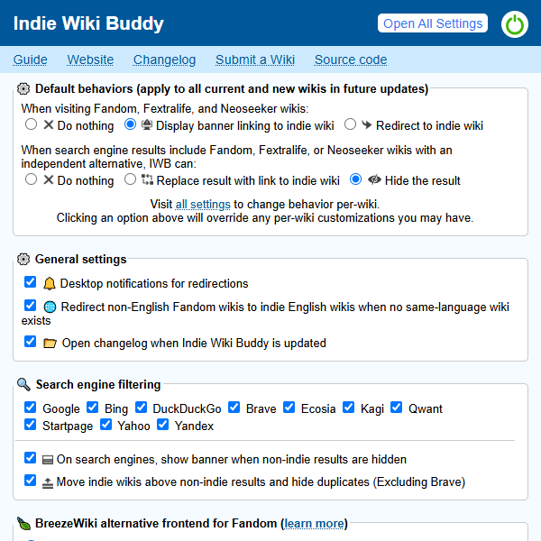

On an internet dominated by ads and corporate-run websites,
Indie Wiki Buddy is a browser extension that helps you easily find and support independent wikis.
When you visit a wiki on Fandom, Fextralife, or Neoseeker, this extension will notify or automatically
redirect you to quality independent wikis when they're available.
Search results in Google, Bing, DuckDuckGo, Yahoo, Brave, Ecosia, Startpage, Qwant, Kagi, and Yandex
can also be filtered, guiding you to visit an independent counterpart instead.
Indie Wiki Buddy supports
over 700 quality, independent wikis across 20 languages.
And you're in full control -- you can choose your experience wiki-by-wiki!
Indie Wiki Buddy also supports
BreezeWiki, a service that renders
Fandom wikis without ads or bloat.
Once enabled, BreezeWiki provides a more enjoyable reading experience when an
independent wiki isn't available!
Once installed, you can access the extension's settings popup via the

in the top bar, at the top right.
If you don't see the icon, it may be in the extension dropdown, which is a jigsaw icon

in both Firefox and Chrome.

Inside this popup, you can toggle the extension on and off via the

power button at the top right.
The first set of options let you quickly set the default behavior for all wikis.
First, you can select happens when you visit Fandom and Fextralife wikis
in which an independent wiki is available.
-
 Disable: You will be neither notified of nor redirected to the independent counterpart.
You will still be directed to BreezeWiki if it is turned on.
Disable: You will be neither notified of nor redirected to the independent counterpart.
You will still be directed to BreezeWiki if it is turned on.
-
 Alert (default): Have a display banner at the top notifying you that an independent wiki is
available.
This will appear on both Fandom and BreezeWiki pages.
Alert (default): Have a display banner at the top notifying you that an independent wiki is
available.
This will appear on both Fandom and BreezeWiki pages.
-
 Redirect: Be automatically redirected to the independent counterpart.
Redirect: Be automatically redirected to the independent counterpart.
The second option is for what happens in search engines when you get results for
Fandom and Fextralife wikis that have independent counterparts.
-
Disable: Search engine results are not affected.
-
 Replace (default): The original non-indie result is disabled, and a button is injected above
to take
you to the indepedent wiki.
Replace (default): The original non-indie result is disabled, and a button is injected above
to take
you to the indepedent wiki.
-
 Hide: Results are hidden in search engines.
A banner will be shown near the top of the page to inform you, and allow you to re-reveal the hidden
results.
Hide: Results are hidden in search engines.
A banner will be shown near the top of the page to inform you, and allow you to re-reveal the hidden
results.
Below that are several global options:
-
üîî Desktop notifications when redirected to an indie wiki or
BreezeWiki
When this option is enabled, you will receive a desktop notification whenever you are
automatically redirected to either an indie wiki or BreezeWiki.
This is on by default.
If you aren't getting notifications when this is enabled, check your operating system's notification
settings to ensure that your browser is allowed to send notifications.
-
üåê Redirect non-English Fandom/Fextralife wikis to independent
English
wikis when no same-language wiki exists
By default, Indie Wiki Buddy will keep users within the same language
(e.g. only redirecting Spanish Fandom wikis to Spanish indie wikis).
However, multilingual speakers may want to also use the many independent English wikis that are
available.
Enabling this option will redirect from non-English Fandom/Fextralife wikis
to independent English wikis when one isn't available in the same language.
-
üå¨Ô∏è Use BreezeWiki alternative frontend on Fandom
This option will render Fandom wikis through BreezeWiki, an
external
service that removes clutter, simplifies the page, and removes ads.
Occasionally, BreezeWiki or one of its mirrors may go down; when this happens, you can simply switch
to
another working instance. This is off by default.
At the bottom of the settings popup, you can click "View All Settings" to open a full settings page where
you can configure your settings per-wiki.
We're always looking for more wikis to add to the extension!
Here are the criteria:
-
The wiki should be editable by the public (that's what makes a wiki a wiki!)
-
The destination wiki should be independent, meaning that decision-making and control of the wiki
largely rests with the wiki's staff and volunteer editing community.
-
Factors include editorial independence, the editorbase's ability to request changes from
their host, and any history of the host exerting decisions contrary to a wiki
community's wishes.
-
Large hosts such as Miraheze and Wiki.gg may be considered less independent,
but are included as they are community-friendly hosts,
provide decent levels of control, and are popular destinations for forking wikis.
-
The destination wiki should be of decent quality, ideally matching (or exceeding) the quality
and size of the origin wiki. While we want to support all independent wikis, we also want
extension users to be directed to wikis where they can find what they are looking for.
- Should be of general interest. Wikis about particularly niche subjects may be discluded.
-
When there are multiple independent wikis on the same subject, we will usually point to the wiki
that is most complete and prominent in the community.
If the independent wiki meets the criteria, you can submit it to be included in one of the following
ways:
Why does this exist?
Large, corporate-run wiki farms have enabled hundreds of great wikis and communities. Unfortunately,
these wiki farms can easily overshadow quality independent wikis, especially in search engine results.
Independent wikis often have the benefit of greater self-determination and fewer ads, but are easily
missed by users who aren't aware of their existence. This extension aims to help wiki readers discover
and user quality, independent wikis.
Why does this extension need access to so many sites?
Indie Wiki Buddy requests access to fandom.com, fextralife.com, and neoseeker.com.
These are the wiki platforms that Indie Wiki Buddy will redirect from.
Indie Wiki Buddy also requests access to BreezeWiki and its mirrors,
in order to perform redirects and display redirect banners.
Indie Wiki Buddy also requests access to ten search engines: Google (across all its country domains),
Bing, DuckDuckGo, Yahoo, Brave, Startpage, Ecosia, Kagi, Qwant, and Yandex in order to filter search
results on those sites. There are almost 200 different domains for Google Search by country
(e.g. google.co.uk, google.ca, google.es, etc.), which take up most of the site accesses you see.
The full list of sites Indie Wiki Buddy requests access to is available
here.
Indie Wiki Buddy never transmits or stores data from these sites. Access is only used in order to
perform redirects, display alert banners, and filter search results.
If an Indie Wiki Buddy update is requesting more permissions, it's usually to add access to a
search engine or BreezeWiki mirror that we are now supporting.
You can check the
changelog for what has changed with each update,
and if you have any questions, don't hesitate to contact us (contact info at bottom of page).
Check out the
list of wikis!
The extension's primary audience is made up of readers looking for information,
and pointing them towards wikis that might not have the information they're seeking isn't an ideal
experience.
What happens when there are multiple independent wikis on the same topic?
We will try to redirect to the most complete wiki, and will also consider factors such as what is most
popular in the wiki subject's community.
Can I see or contribute to the code?
Yes! Indie Wiki Buddy is open source and available
on GitHub.
Question not answered? Please get in touch using the contact info below!
Feel free to get in touch with questions, comments, or ideas!
A
Hamstro project by
Kevin Payravi
Source |
Changelog |
List of wikis |
Privacy policy
Fandom is a trademark of
Fandom, Inc.
Fextralife is a trademark of
Kinbundo Limited.
Indie Wiki Buddy is not affiliated with either site.